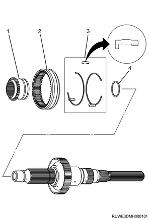
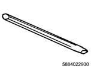
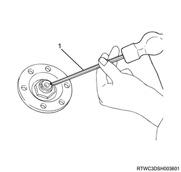
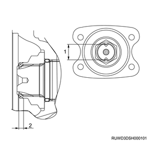

Transfer assembly reassembly (All models)
1. Oil pump reassembly
1. Assemble the oil pump.
Note
- Tighten the clamp to fix the hose.
- Tighten the clamp to fix the screen.
Caution
- Watch for the orientation of the clamp.
- Oil pump assembly
- Clamp
- Hose
- Screen assembly
2. 2-4 shift assembly reassembly
1. Assemble the 2-4 shift assembly.
2. Install the shift block to the shift rod.
3. Install the spring pin to the shift block.
Caution
- Use a new spring pin.
Note
- Head of the spring pin should not stick out of the surface of shift block.
- Shift block surface
Note
- Install the spring.
- Install the shift arm.
- Install the snap ring by compressing the spring.
Caution
- Use a new snap ring.
Note
- Install the guide roller.

- Shift rod
- Shift arm
- Spring
- Shift block
- Spring pin
- Guide roller
- Snap ring
3. H-L shift assembly reassembly
1. Assemble H-L shift assembly.
- Shift arm
- Shift block
- Inner retaining ring
- Front collar
- Shift block spring
- Rear collar
- Shift rod
- Outer snap ring
- Guide roller
- Spring pin
2. Install the shift arm to the shift rod.
Note
- Install the spring pin.
Caution
- Use a new spring pin.
Note
- Head of the spring pin should be at the same level as the rest of surface and should not stick out.
- Install the front collar, spring, and rear collar in this order to the shift block.
- Compress the shift block spring by using the socket and vise.
- Install the inner retaining ring.
- Clearance of the arm should be within the specified value.
- 25.6°
- 14 mm {0.551 in}
3. Install the shift block to the shift rod.
Note
- Compress the H-L shift spring by using a socket and a vise.
Note
- Install the outer snap ring.
Caution
- Use a new snap ring.
Note
- Install the guide roller.

4. Front output shaft ball bearing installation
1. Install the front output shaft ball bearing to the front output shaft using a press.
Note
- Completely insert the front output shaft ball bearing, and install the snap ring.
5. Front transfer case reassembly
1. Apply the oil to the oil seal.
Note
- Apply the recommended oil or equivalent to the outside of the input shaft oil seal and front output shaft oil seal.
Caution
- Use a new oil seal.
2. Apply the grease to the oil seal.
Note
- Apply Besco L-2 grease or equivalent to the lip section of the input shaft oil seal and front output shaft oil seal.
3. Install the oil seal to the front transfer case using special tool.
SST: 5-8840-2785-0 - oil seal installer
Note
- Press-fit the input shaft oil seal and front output shaft oil seal to the specified position.
Caution
- Clean the oil seal mounting section and the surrounding area.
- Ensure that there are no burrs, etc., around the oil seal mounting section.
- When press-fitting, take care not to damage the lip section of the oil seal.
- Oil seal installer
- Oil seal installer
4. Install the internal gear to the transfer case.
Note
- Apply the recommended oil or grease to the damper ring.
- Install the damper ring and the internal gear to the transfer case.
- The damper ring should be located between the internal gear and the case.

- Damper ring
- Internal gear
- Retaining ring, spiral-type
Note
- Installation direction of the damper ring should be as shown in the diagram.
Note
- Push the internal gear against the damper ring by using a ring gear installer and a press.
- Install a spiral-type retaining ring.
SST: 5-8840-2784-0 - ring gear installer
- Ring gear installer
Note
- Install the needle bearing to the carrier and gear assembly.
- Completely insert the needle bearing into the carrier and gear assembly using a bearing installer and press.
SST: 5-8840-2782-0 - bearing installer
- Bearing installer
5. Install the input shaft bearing to the gear assembly.
Note
- Completely insert the ball bearing into the carrier and gear assembly using the appropriate special tool and a press.
Note
- Install the carrier snap ring.
- Carrier snap ring
Note
- Install the thrust needle bearing, sun gear input shaft, needle bearing planetary dog teeth, and dog teeth snap ring in that order to the carrier and gear assembly.
- Install the outer retaining ring to the transfer case.
- Install the carrier and gear assembly using snap ring pliers.
Caution
- Fit the outer retaining ring into the groove.
- Outer retaining ring
- Carrier and gear assembly
- Thrust needle bearing
- Needle bearing
- Sun gear input shaft
- Planetary dog teeth
- Dog teeth snap ring
6. Assemble the main shaft.
Note
- Install the 2-4 hub using a press.
Note
- Install the hub snap ring.
- Install the synchronizer key spring, synchronizer key, and the 2-4 sleeve to the 2-4 hub.
- The key and the opening of spring end should face in the opposite directions.
- Insert the H-L sleeve into the main shaft.

- H-L sleeve
- 2-4 sleeve
- Synchronizer key and key spring
- Hub snap sing
7. Install the sleeve to H-L shift assembly.
8. Install the sleeve to the 2-4 shift assembly.
Note
- Apply the recommended oil to the periphery of each shift assembly insertion hole of the transfer case.
- Install the main shaft together with the H-L shift assembly and 2-4 shift assembly to the shift drum.
- Align the shift shaft spline with the shift drum, and install the shaft to the drum.
- H-L sleeve and shift assembly
- Main shaft and shift arm with 2-4 sleeve assembly
- Shift drum shaft
- Shift drum
Caution
- Be careful with assembling direction.
Note
- Apply the recommended oil to the main shaft.
- Align the block ring, outside ring, and inside ring with the 2-4 hub assembly, and install them.
- Assemble the sprocket, the transfer chain, and the front output shaft.
9. Install the front output shaft to the main shaft and the transfer case.
Note
- Install the sprocket, the transfer chain, and the front output shaft to the main shaft and the transfer case.
- Install the sprocket thrust washer as aligned in a straight line with the main shaft groove.

10. Select the snap ring.
Caution
- Use a new snap ring.
Note
- Select a snap ring that minimizes play of the shaft, and install it to installation groove of the main shaft.
| Snap ring thickness | Identification color |
| ： 2.15 mm { 0.085 in } | Red |
| ： 2.10 mm { 0.083 in } | No identification color |
| ： 2.05 mm { 0.081 in } | Blue |
| ： 2.00 mm { 0.079 in } | White |
- Block ring
- Outside ring
- Inside ring
- Sprocket
- Chain
- Front output shaft
- Thrust washer
- Snap ring
11. Measure the snap ring using a vernier caliper.
Note
- Measure outer diameter of the snap ring, and use the snap ring so that the measured value is at the standard value.
Standard： 53 to 54 mm { 2.09 to 2.13 in }
6. Rear transfer cover installation
1. Install the rear transfer cover to the transfer case.
2. Install the shift rod hole plug to the rear transfer cover.
Note
- Replace with new parts as necessary.
Caution
- Press-fit until it is the same as the rear cover surface.
Note
- Place a rear cover as its aligning surface faces upward.
- Install the front output shaft needle bearing by using a special tool and a press.

SST: 5-8840-2783-0 - bearing installer
Note
- Align the bearing surface where the bearing manufacturer name is marked with the bearing installer.
- Bearing installer
Note
- Install the oil pump wire snap ring to the rear cover.

- Wire snap ring
Note
- Temporarily install the speedometer drive gear to the inside of the rear cover.
- Pay careful attention to the installation direction so that the side of the speedometer drive gear with the groove is on the oil pump side.
- Install the rear output shaft ball bearing by using a special tool and a press.

SST: 9-8522-1268-0 - bearing & oil seal installer
Note
- Do not tap to insert the ball bearing with a hammer.
- Bearing & oil seal installer
Note
- Install the rear output shaft retaining ring.
- Place the oil pump at an installation position.
3. Install the oil pump strainer to the rear cover.
Tightening torque： 15 N・m { 1.5 kgf・m / 11 lb・ft }
- Oil pump assembly
- Wire snap ring
- Retaining ring
- Ball bearing
- Speedometer drive gear
- Rear cover
Note
- Apply liquid gasket and Loctite FMD127 to the areas indicated with slanted lines in the following diagram.
Caution
- There should be no discontinuity or misalignment of the liquid gasket.
- Confirm that there is no debris or oil adhered to the liquid gasket.
4. Install the rear cover to the transfer case.
Tightening torque： 22 N・m { 2.2 kgf・m / 16 lb・ft }
Note
- The following applies to models with ABS.
5. Install the plug to the rear transfer cover.
7. Front companion flange installation
1. Apply the oil to the O-ring.
Caution
- Use a new companion flange O-ring.
Note
- Apply the recommended oil or equivalent to the companion flange O-ring and install it to the front output shaft.
2. Install the front companion flange to the output shaft.
Note
- Fix the flange by using a special tool.

SST: 5-8840-0133-0（J-8614-11） - flange holder
Note
- Install a new front companion flange end nut and tighten it to the specified torque.
Tightening torque： 137 N・m { 14.0 kgf・m / 101 lb・ft }

- Flange holder
Note
- Crimp the front companion flange end nut using the special tool.

SST: 5-8840-2293-0 - end nut lock punch

- End nut punch

- Maximum value: 26 mm {1.02 in}
- Minimum value: 4 mm {0.16 in}
8. Detent plug preparation
1. Prepare the detent plug.
Note
- Apply LOCTITE 575 or equivalent to the threaded portion of the detent plug.
9. Snap ring installation
1. Install the snap ring to the rear output shaft using special tool.
Caution
- Use a new snap ring.
Note
- Install it from behind the shaft to make sure that it fits to the groove securely.

SST: 5-8840-2787-0 - snap ring installer
- Snap ring installer
10. Rear output shaft oil seal installation
Caution
- Clean the installation section of the oil seal and its circumference.
- Make sure that there is no burr at the oil seal installation section.
- Use a new oil seal.
1. Apply the oil to the rear output shaft oil seal.
Note
- Apply the recommended oil to the outside of the rear output shaft oil seal.
Caution
- Use a new rear output shaft oil seal.
2. Apply the grease to the rear output shaft oil seal.
Note
- Apply BESCO L2 grease or equivalent to the oil seal lip.
3. Install the rear output shaft oil seal to the transfer case using special tool.
Note
- Use a oil seal installer.
Caution
- Do not damage the lip area of the oil seal when firmly fitting.
SST: 5-8840-2786-0 - oil seal installer

- Oil seal installer
- 3.0 - 3.8 mm {0.118 - 0.150 in}
11. Detent plug installation
1. Install the detent plug to the transfer case.
Note
- Install the detent ball, detent spring and 2 detent plugs to the transfer case.
Tightening torque： 19 N・m { 1.9 kgf・m / 14 lb・ft }
12. Neutral switch installation
1. Install the neutral switch to the transfer case.
Note
- Install the neutral switch of the brown harness cover.
Tightening torque： 39 N・m { 4.0 kgf・m / 29 lb・ft }
13. 2-4 switch installation
1. Install the transfer indicator switch to the transfer case.
Note
- Install the 2-4 switch that has a gray-colored harness cover.
Tightening torque： 39 N・m { 4.0 kgf・m / 29 lb・ft }
Note
- Install the switch bracket.
Tightening torque： 15 N・m { 1.5 kgf・m / 11 lb・ft }
14. 2WD-4WD actuator installation
1. Install the 2WD-4WD actuator to the transfer case.
Note
- Install the actuator in the same direction as the shaft.
Tightening torque： 22 N・m { 2.2 kgf・m / 16 lb・ft }
2. Install the breather hose to the actuator.
Note
- Install the breather hose between the transfer actuator and the transfer case.
15. Speedometer driven gear installation
1. Install the speedometer driven gear to the transfer case.
Note
- For models without ABS
- Install the speedometer driven gear, speedometer bushing, and speedometer stay.
Tightening torque： 15 N・m { 1.5 kgf・m / 11 lb・ft }
16. Stone guard installation
1. Install the stone guard to the transfer case.
Tightening torque： 21 N・m { 2.1 kgf・m / 15 lb・ft }